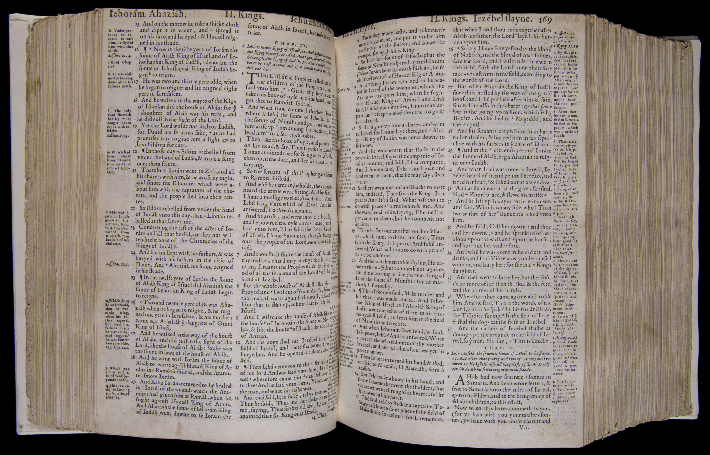

< Back to
A New Era of Tension
The Bible and Holy Scriptves conteyned in the Olde and Newe Testament
1 2017-06-15T15:01:13+00:00 Newberry Library 09980eb76a145ec4f3814f3b9fb45f381b3d1f02 3 7The Geneva Bible
: The Geneva Bible was the first English Bible made through collaboration; it was translated by a committee of about 11 translators and editors working in exile in Switzerland. First published in 1560, it remained the most successful English translation of the Bible among the common people for almost a century; at least 140 complete or partial editions were issued by 1644.
plain
2017-06-30T19:54:34+00:00
The Bible and Holy Scriptves conteyned in the Olde and Newe Test
Religious Change
The Newberry Library
VAULT Case C 22 .560
1560
Page 168v-169r
20170430
231806
The Bible and Holy Scriptves conteyned in the Olde and Newe Testament. Geneva: Rowland Hall, 1560.
Newberry Library
09980eb76a145ec4f3814f3b9fb45f381b3d1f02
No annotations to display.

Description
Details
Citations
Source
The Bible and Holy Scriptves conteyned in the Olde and Newe Testament. Geneva: Rowland Hall, 1560.
The Geneva Bible
: The Geneva Bible was the first English Bible made through collaboration; it was translated by a committee of about 11 translators and editors...
more working in exile in Switzerland. First published in 1560, it remained the most successful English translation of the Bible among the common people for almost a century; at least 140 complete or partial editions were issued by 1644.
| Scalar URL | http://publications.newberry.org/dig/rcp/media/the-bible-and-holy-scriptves-conteyned-in-the-olde-and-newe-testament (version 7) |
| Source URL | http://publications.newberry.org/dig/rcp/media/case_c_22_560_tp_o2.jpg (image/JPEG) |
| dcterms:title | The Bible and Holy Scriptves conteyned in the Olde and Newe Testament |
| dcterms:description | The Geneva Bible : The Geneva Bible was the first English Bible made through collaboration; it was translated by a committee of about 11 translators and editors working in exile in Switzerland. First published in 1560, it remained the most successful English translation of the Bible among the common people for almost a century; at least 140 complete or partial editions were issued by 1644. |
| dcterms:source | https://i-share.carli.illinois.edu/nby/cgi-bin/Pwebrecon.cgi?DB=local&v1=1&BBRecID=397260 |
| iptc:ObjectName | The Bible and Holy Scriptves conteyned in the Olde and Newe Test |
| iptc:OriginalTransmissionReference | Religious Change |
| iptc:Credit | https://i-share.carli.illinois.e |
| iptc:CopyrightNotice | The Newberry Library |
| iptc:Source | VAULT Case C 22 .560 |
| iptc:Headline | 1560 |
| iptc:Caption-Abstract | Page 168v-169r |
| iptc:DateCreated | 20170430 |
| iptc:TimeCreated | 231806 |
| dcterms:isPartOf | http://collections.carli.illinois.edu/cdm/ref/collection/nby_dig/id/538 |
| dcterms:bibliographicCitation | The Bible and Holy Scriptves conteyned in the Olde and Newe Testament. Geneva: Rowland Hall, 1560. |
| View as | RDF-XML, RDF-JSON, or HTML |
{kind=link}
This page is referenced by:
-
1
media/case_c_223_611_tp_02_o3_cropped.jpg
2017-06-14T20:09:27+00:00
A New Era of Tension
15
image_header
2017-08-15T20:56:56+00:00
Detail from The Holy Bible. London: Robert Barker, 1611.
Tensions were inevitable in an age when political leaders and their subjects each looked to assert their religious authority. We can see the traces of these tensions in the books they used, especially the most important book of the period: the Bible. The two English Bibles shown here are potent reminders of how differently princes and the people viewed religion.
English exiles in Geneva created a cheap, portable, and accessible Bible for their fellow Protestants living under Queen Mary I, who had returned England to Catholicism in 1553. The so-called Geneva Bible was intended to keep Protestantism alive in England by helping “simple lambs” understand the Bible as well as biblical scholars did. To do this, the editors added tables, maps, and – most importantly – a series of printed marginal annotations clarifying certain passages. The most relevant for our purposes are those discussing the limits on princely authority. In the opening shown here, readers learned that princes could not do whatever they pleased with regard to religion; Scripture taught that “God[’]s judgments appear even in this world against them that suppress his word and persecute his servant.”
King James I had the Geneva Bible in mind when he called a conference to deal with the religious differences in his kingdom. For James, these tensions were made worse by the many competing English translations of the Bible, which made it difficult for anyone to know what God’s word really was. “Worst of all” in his view was the Geneva Bible, largely because of annotations that seemed to encourage subjects to resist princes whose religious views contradicted their own. To settle these disagreements, James called for a new, definitive translation of the Bible into English that came to be called the King James Bible. As this opening shows, this princely Bible conspicuously had no marginal annotations at all.
These Bibles illustrate not only the existence of contrasting views of religion among people from the same country and nominally of the same faith, but also the potential danger posed by differences between those views. The Geneva Bible tended to appeal to people who valued obedience to God’s will over any other kind, even that of the prince. On the other hand, the King James Bible served as an instrument, made by a church headed by a prince, to create and even enforce unity through the religious authority of that prince and his or her church. These views were not easily bridged, and the tensions between them cast a cloud over the princes-people dynamic that never fully disappeared and that sometimes, as in mid-17th-century England, erupted into violence.
{kind=link}
- The Newberry
- 60 West Walton Street
- Chicago, Illinois 60610
- (312) 943-9090
Comments